Болгарія
Болгарія є найстарішою країною в Європі, створеною в 681 році нашої ери. Це - країна троянд та смачного вина. Мені вдалося відвідати декілька міст, серед яких:
-
курорт Золоті піски.
Назва курорту дав чудовий золотистий прибережний пісок. Згідно з місцевою легендою, на цьому березі пірати закопали золотий скарб, а щоб помститися їм, природа перетворила його в дрібний золотистий пісок.
-
місто Святий Констянтин та Єлена.
В місті розташована знаменита каплиця Святого Костянтина та Єлени, яка залишилася на місці старовинного монастиря.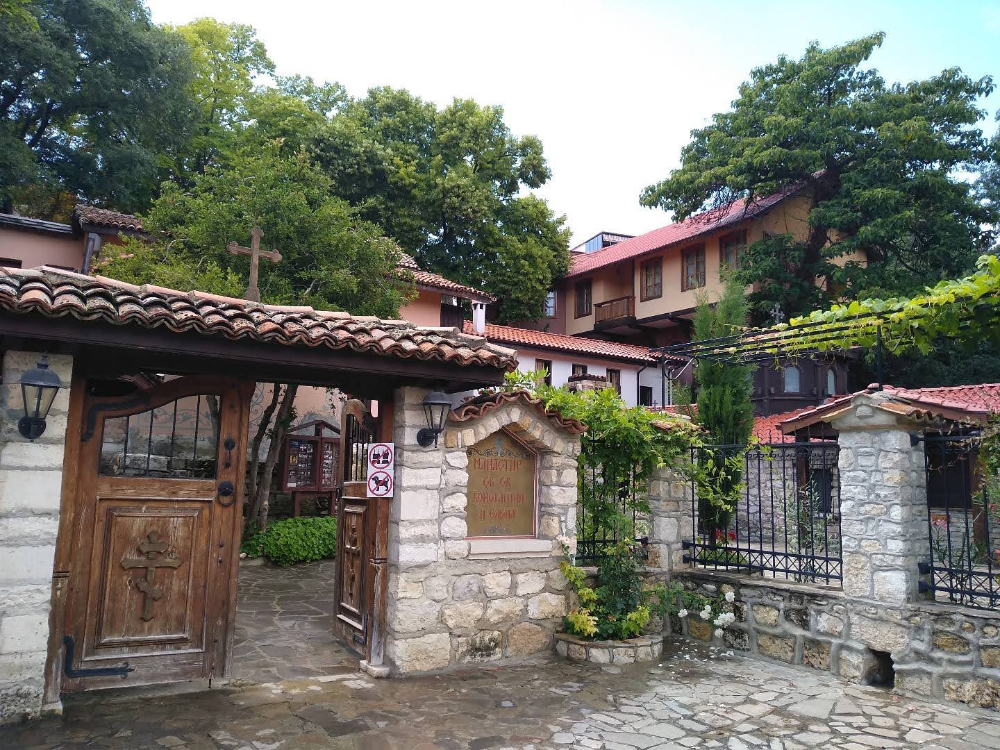
Перед вівтарем у церкві розташована плита з каменю, що накриває джерело, звідки, за легендою, тече свята вода. -
місто Албена.
Албена – наймодніший, а значить і найдорожчий курорт чорноморського узбережжя Болгарії. Вона відома своїми лікувальними мінеральними водами, грязелікуванням і таласотерапією.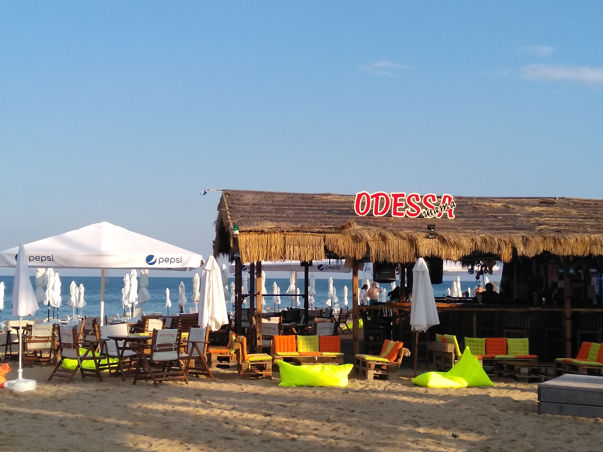
Але я навіть тут знайшла Одесу: тільки погляньте на фото!
P.S. Поки готувала статтю, дізналася, що на даний момент країна є одним зі світових лідерів за кількістю фахівців у сфері ІТ. (Отакої!)
Угорщина
Я змогла відвідати лише 1 місто цієї країни - Будапешт, але подорож була цікавою.
Зараз розповім.
-
Угорський парламент.
Найбільша будівля Угорщини: в одній її частині проходять засідання уряду, інша - відкрита для відвідування всіх бажаючих.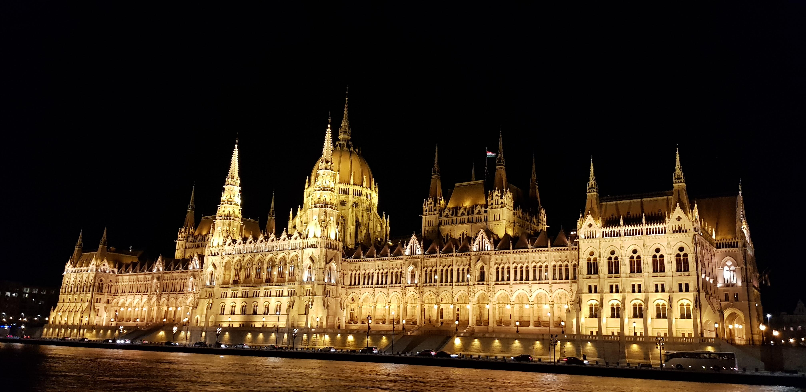 -
Пам'ятник Святому Стефану (Іштвану).
Як відомо, король Іштван – найважливіша фігура угорської історії, оскільки саме за його правління (близько 997–1038 років) язичницькі угорські племена прийняли християнство і сформували незалежну державу, яка стала повноправним суб'єктом тогочасних міжнародних відносин.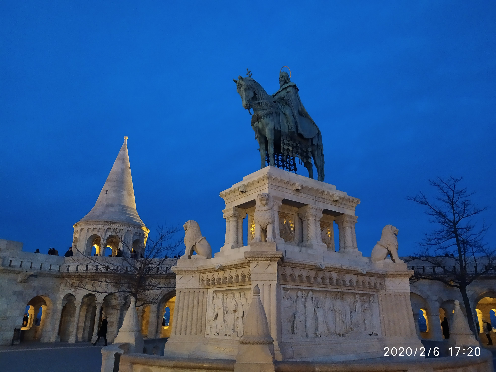 -
Рибальський бастіон.
Рибальський бастіон - без сумнівів, одне з найвідоміших споруд в Будапешті. Дивно, але ніякої риби і рибалок тут давно вже немає, тому туристів подібна назва часто збиває з пантелику. Щоб розгадати цю загадку, кожному мандрівникові потрібно трохи зазирнути в історію міста.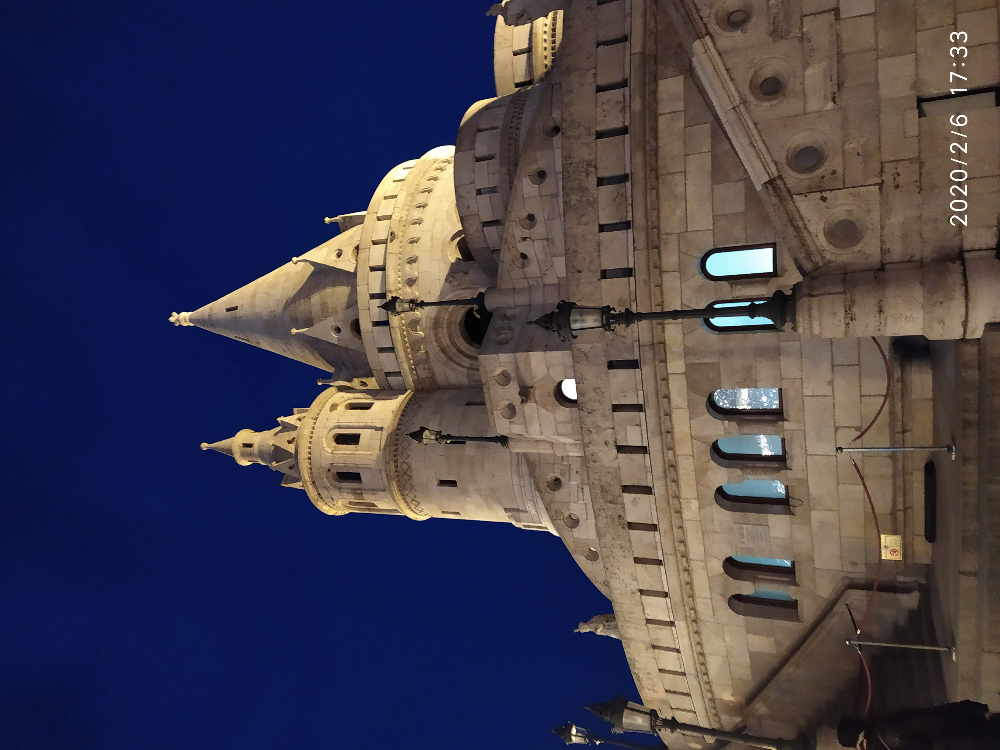
Румунія
В Румунії мені довелося побувати на природі та помандрувати в горах. Румунські гори - це прекрасно (мабуть, тому ще це - частина Карпат ;)
-
Румунські гори
Румунія – країна з сприятливою екологічною обстановкою, м’яким кліматом і дивовижно живописна.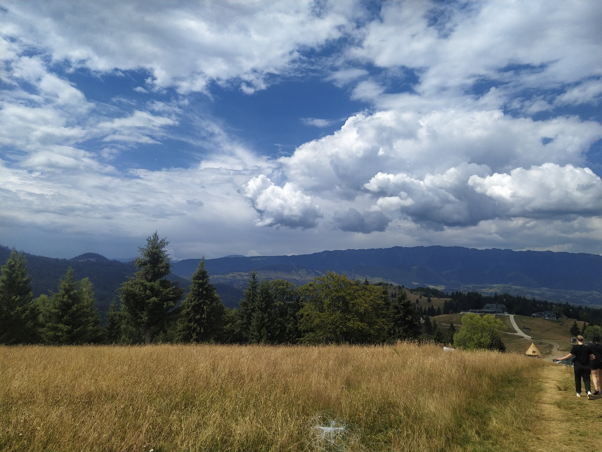 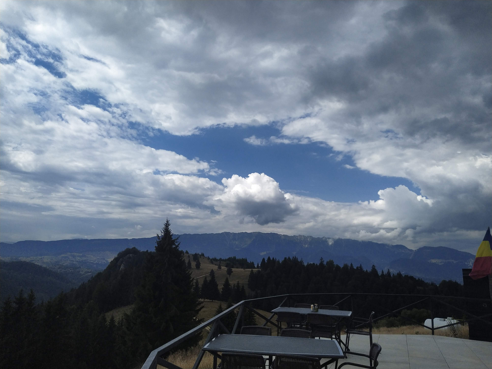 -
Фортеця Бран
Відомий за межами Румунії як справжній замок Дракули, замок Бран часто називають натхненням для знаменитого графа Дракули у відомій книзі Брема Стокера. Однак насправді опис вигаданого замку Дракули, що руйнується, майже не має подібності з бездоганним замком Бран, і є лише слабкі асоціації з Владом Імпалером, передбачуваним натхненником Дракули. Насправді немає жодних доказів того, що Брем Стокер взагалі знав про існування цього замку.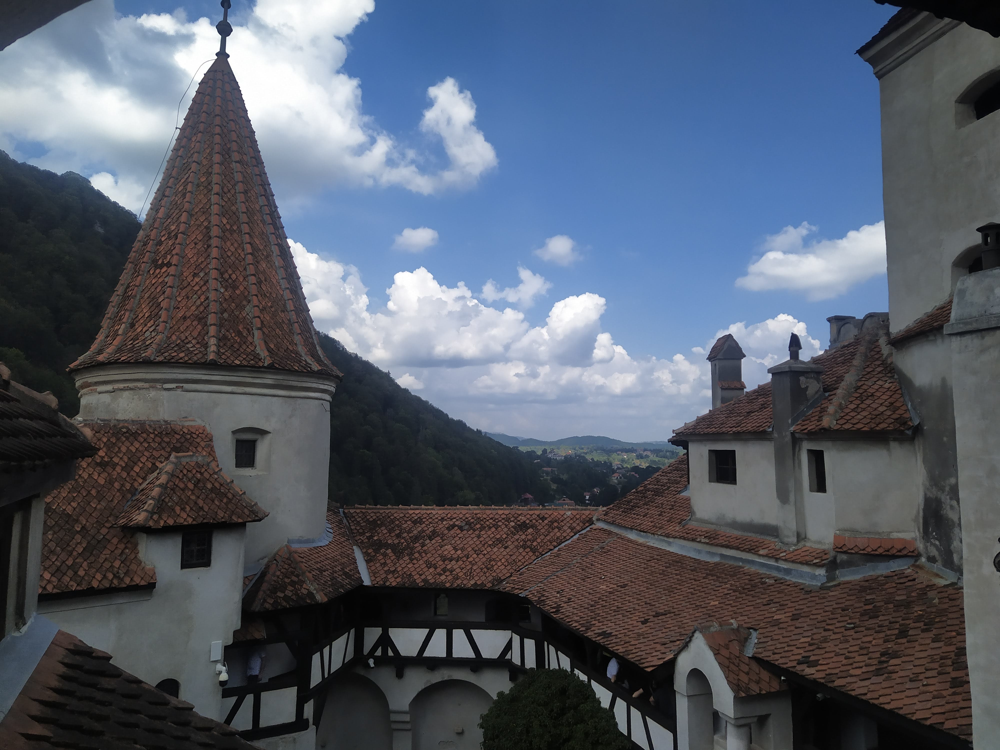 -
Чарівні види природи
Сильна, але загадкова країна, повна контрастів, з яскравими західними містами та селами, які, здається, застрягли в напрочуд ностальгійній викривленій епосі. Перегляньте ще декілька фото: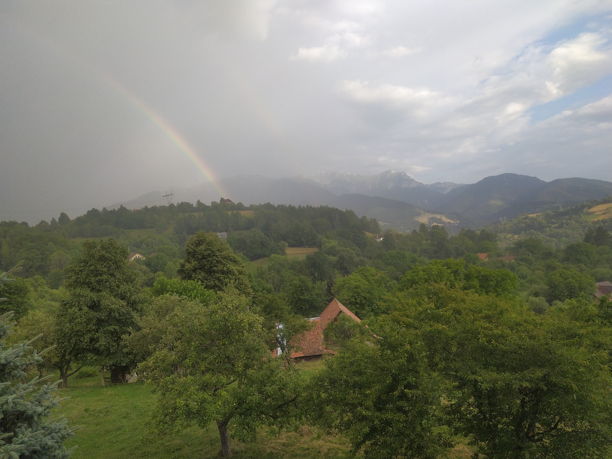 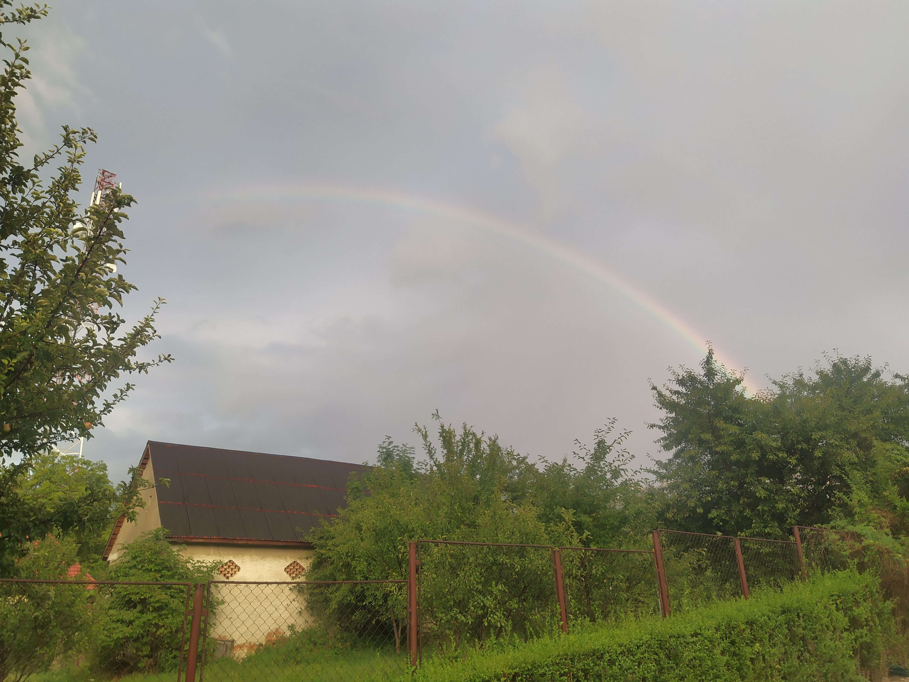 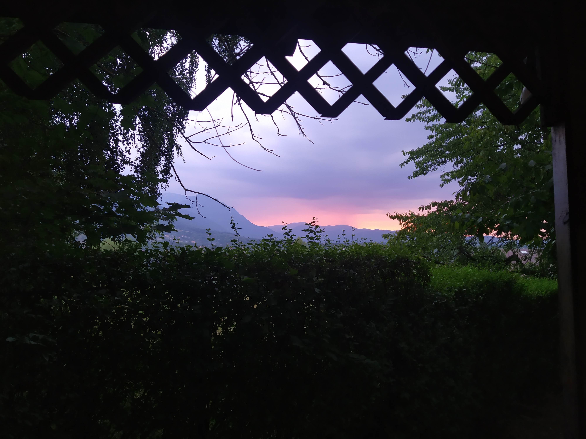
Молдова
Назва країни походить від Молдавського князівства, яке, в свою чергу, отримало назву від річки Молдови. Але сама річка Молдова не тече на території сучасної Молдови, вона знаходиться в довколишній Румунії.
Молдова вважається однією з найбільш щільно заселених країн Європи. Щільність населення в країні становить приблизно 132 людини на квадратний кілометр.
-
Кишинів
Cтолиця Кишинів - це місто 23 озер та незліченних парків. Найвідоміший міський парк Кишиніву - Долина троянд.
Історія розповідає, що неподалік міста Пересечень, у долині з трьома озерами, було святилище, присвячене слов’янським племінним богам та мертвим предкам. Його називали долиною Рос на честь - Руса.
Після поширення християнства серед слов'янських племен у X-XI століттях, очевидно, святиня була зруйнована. Але її назва збереглась серед місцевих жителів, і з часом вона була перетворена на Долину троянд. 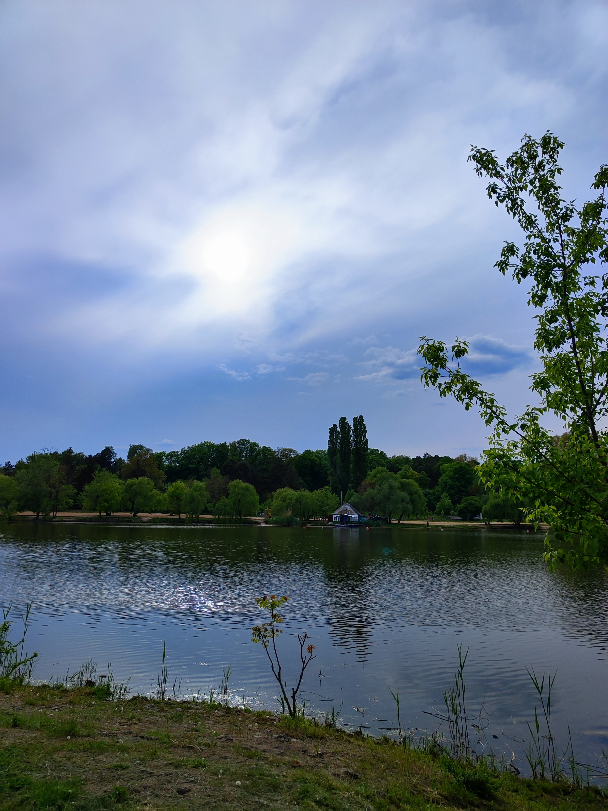
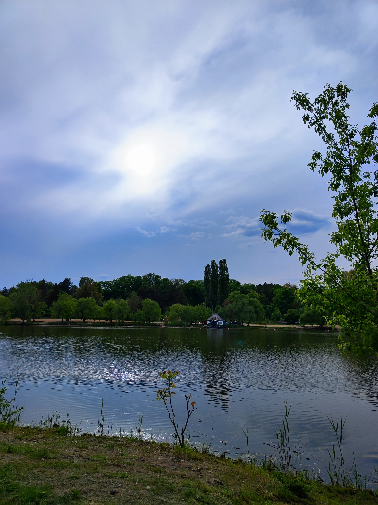
-
Ботанічний сад
Кишинівський ботанічний сад – популярне місце відпочинку, незважаючи на те, що розташований він на околиці міста. Загальна площа саду становить 104 гектари, а росте тут більше 10 тисяч видів рослин.
-
Смаколик Кишиніву - кюртош
Що ж собою являє кюртош? Це солодка випічка, яка бере своє коріння з Угорщини, але дуже популярний у Румуниї, Молдові та інших країнах. Це виріб спочатку готувався як ласощі на весіллі чи фестивалі. Раніше кюртош калачі робили на вугіллі під відкритим небом на ярмарках і фестивалях, тепер же їх виготовляють у спеціальних печах.
Як тільки калач витягують з печі, його посипають топінгом на ваш вибір. Це може бути кориця, горіхи, мигдальна стружка, білий або чорний шоколад, кокосова стружка.
-
Аеропорт міста
Головний аеропорт Молдови, розташований за 13 км на південний схід від столиці Кишинів.
Більше інформації про ці країни можна знайти на сайті Google